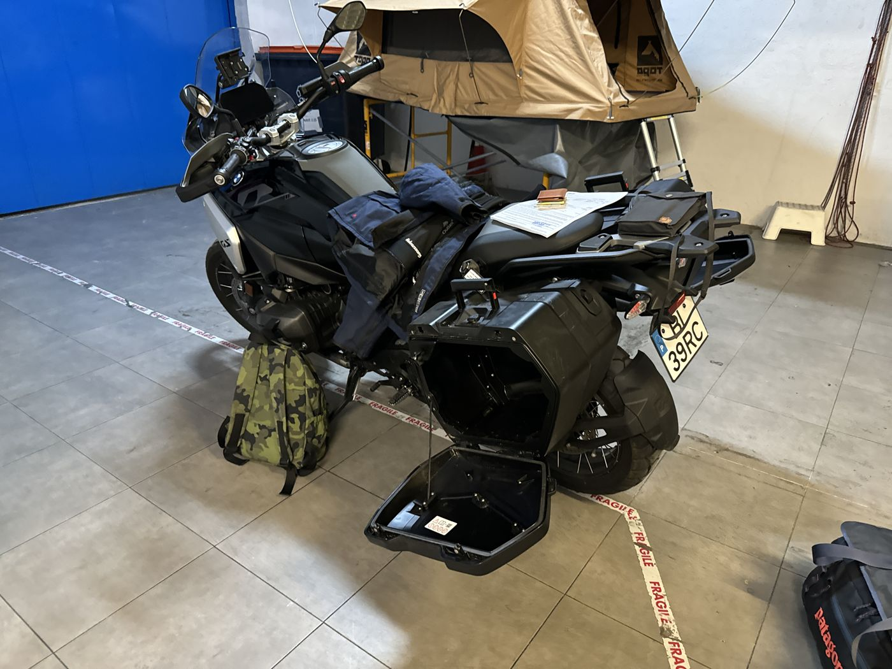
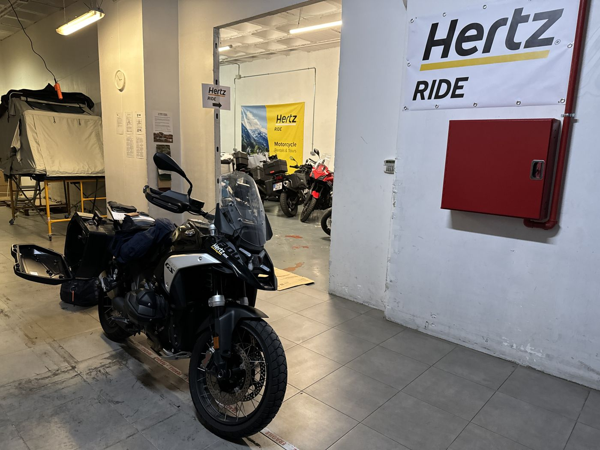
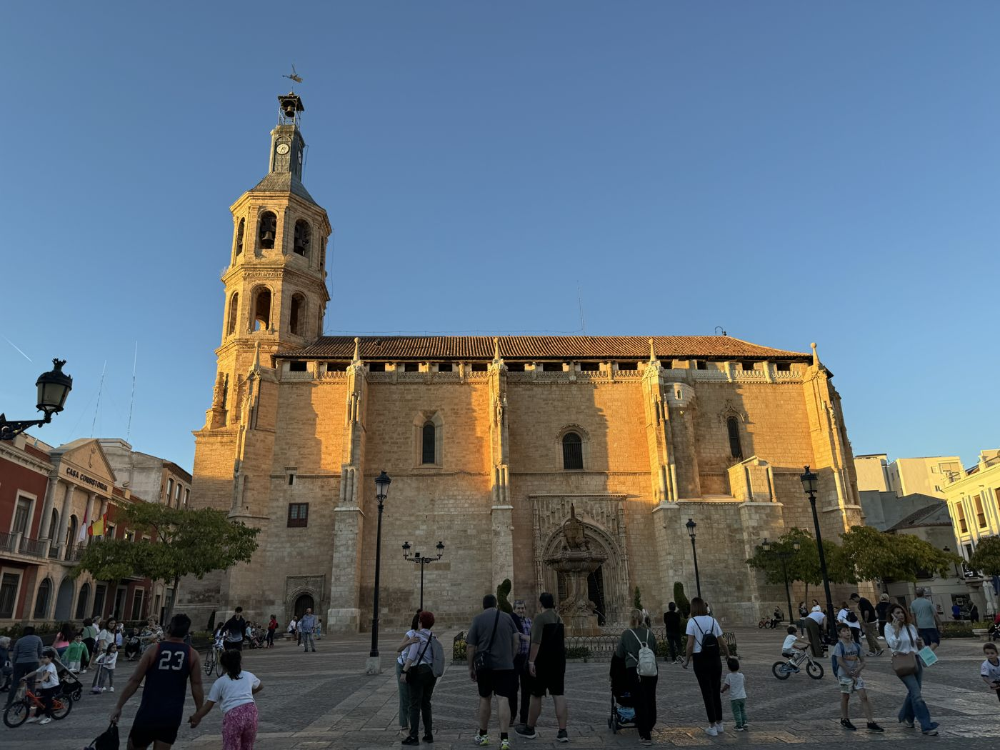
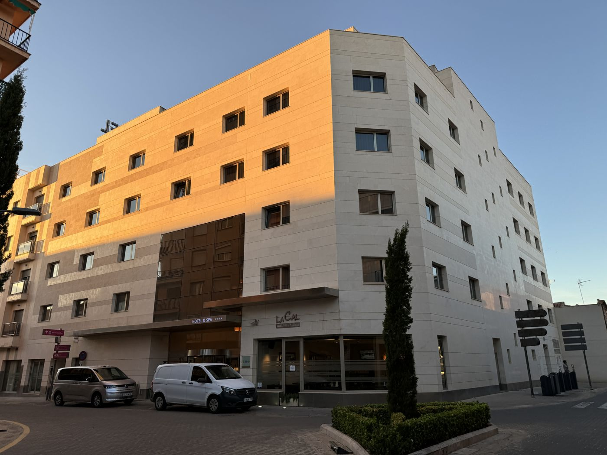

Day 1 · Tue, Oct 1
Madrid Valdepeñas
~134 mi (215 km)
Pick up the BMW R 1300 GS at Hertz Ride in Madrid at 3 pm, then south to Valdepeñas, with a thermal-water spa circuit booked at the hotel for 6 pm.




Overnight
Hotel Veracruz Plaza & Spa, Valdepeñas